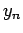
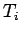

Next: XML Autopilot Config File Up: FlightGear Autopilot: Theory, Configuration, Previous: Control Theory 101
The PID algorithm used for the FlightGear autopilot was provided by Roy Ovesen. It is more sophisticated and approaches the problem a bit differently than the what I describe earlier. Rather than dealing in absolute terms, it calculates a change in output based on the change in error. It is able to ease into large control inputs rather than slam the controls full stop if there is a larger error term when it is activated.
Finally it handles the problem of integrator windup. Integrator wind up can occur when the system simply can't get to the target value, even at full control input. For instance a large truck commanded to go 90km/hr might slow to 70km/hr on a steep hill even at full throttle. During this time while climbing the hill, the integrator term is accumulating a tremendous amount of error. This is called integrator windup. Once you hit the crest of the hill you have to overshoot the target speed for a while to ``unwind'' the integrator term (which at this point may have grown very large.) This can cause you to significantly over-speed for as long as you were undershooting the target. This can lead to many unsafe and unstable situations so ``integrator windup'' is generally considered an undesirable effect.
The change in output, , for the current time step is calculated as follows:
The absolute output,  is then calculated as:
is then calculated as:
Where:
| Variable | Description |
| The incremental output | |
| Proportional gain | |
| Proportional error with reference weighing | |
| where: | |
| : Process value, measured | |
| Error, | |
| Sampling interval (i.e. ) | |
|  | Integrator time |
| Derivator time | |
| Derivate error with reference weighing and filtering | |
| where: | |
| : Filter time | |
|
where |
|
| : Unfiltered derivate error with reference weighing | |
| where: | |
| absolute output |
| Variable | Description |
| Current process value | |
| Reference point | |
| Proportional weighing factor (default = 1) | |
| Unfiltered derivative error weighing factor (default = 0) | |
| Filter time weighing factor (default = 0.1) | |
| Proportional gain | |
| Sampling interval (i.e. ) | |
| Integrator time | |
| Derivator time | |
| Minimum output value for |
|
| Maximum output value for |
| Variable | Description |
| Absolute output value |